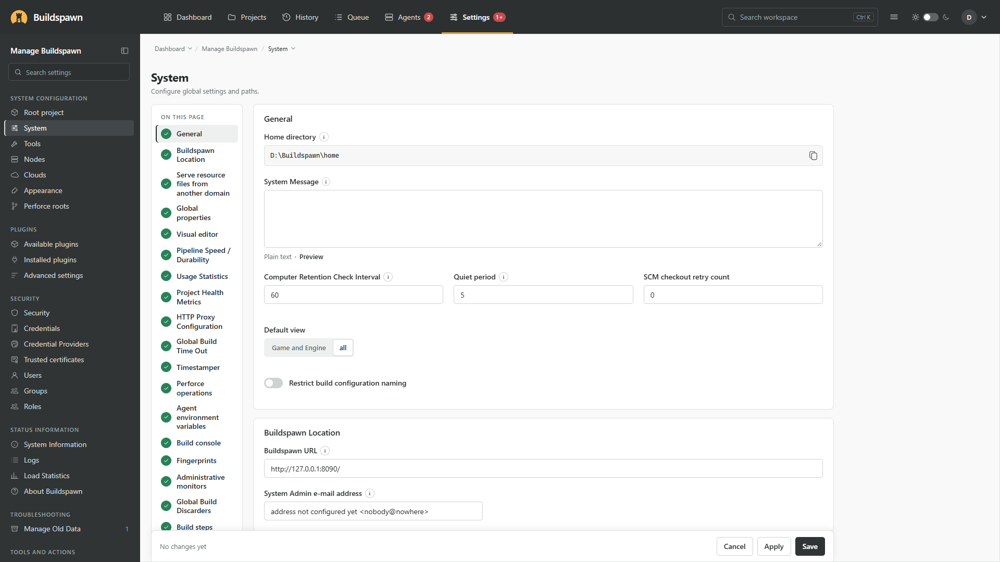

Back up and upgrade the server
Take a full copy of your server's data, then move to a new version of Buildspawn without losing projects, history or settings.
Before you start
- You can sign in to the server computer as an administrator (Windows) or with
sudo(Linux). On macOS, your own account is enough. - You have room for the copy: another disk or a network share at least as large as the home folder.
- You have the new version's download for the same system, from the same place you got the first one. Read its release notes. See Release notes.
- You have picked a quiet time. The server is stopped while you copy and upgrade, so no builds run.
Everything Buildspawn knows is in one folder, the home: projects, build configurations, build history, users, credentials and settings. The program files are separate. Back up the home and the settings file, and you can always go back.
| Download | Home (back this up) | Settings file | Stop and start |
|---|---|---|---|
| Windows setup | C:\ProgramData\Buildspawn\data | C:\ProgramData\Buildspawn\buildspawn.cfg | buildspawn-service stop / start |
| Windows portable zip | data\ in the Buildspawn folder | buildspawn.cfg next to Buildspawn.exe | The app: Run here › Stop / Start |
| Linux .deb and .rpm | /var/lib/buildspawn | /etc/default/buildspawn (.deb), /etc/sysconfig/buildspawn (.rpm) | sudo systemctl stop / start buildspawn |
| Linux and macOS tar.gz | data/ in the Buildspawn folder | buildspawn.conf in the folder | bin/buildspawn stop / start |
Steps
1. Find your home folder
- In the web interface, click Settings, then System.
- Read Home directory under General. If it is not the folder in the table above, the settings file moves it: back up that folder instead.

2. Back up
- Let running builds finish. To stop new builds from starting, click Prepare for Shutdown on the Settings page. Type a reason, such as Backup until 18:00: everyone sees it in a banner. Click Cancel Shutdown if you decide to carry on without stopping.
- Stop Buildspawn, with the command for your download in the table above. A copy taken while builds write files can be incomplete.
- Copy the whole home folder and the settings file to a safe place.
Windows setup, in a command prompt opened as administrator:
cd "C:\Program Files\Buildspawn" buildspawn-service stop robocopy C:\ProgramData\Buildspawn D:\Backup\Buildspawn /MIR /XD logs buildspawn-service startLinux package:
sudo systemctl stop buildspawn sudo tar -czf /backup/buildspawn-$(date +%F).tar.gz -C /var/lib buildspawn /etc/default/buildspawn sudo systemctl start buildspawnOn RHEL, Rocky and Fedora, write
/etc/sysconfig/buildspawninstead of/etc/default/buildspawn.Linux or macOS tar.gz, from the Buildspawn folder:
bin/buildspawn stop tar -czf ~/buildspawn-backup-$(date +%F).tar.gz data buildspawn.conf bin/buildspawn start - Start Buildspawn again, unless you go on to upgrade now.
Always keep the secrets folder and the secret.key files of the home in the same backup. Without them, Buildspawn can't read the saved passwords and credentials.
To save space you can leave out workspace/ (builds check the sources out again), war/ (unpacked at each start) and the logs folder.
3. Upgrade
Pick the steps for your download. Each one keeps your home and your settings file.
Windows setup
- Run the new
buildspawn-<version>-setup.exe. - The setup stops the service, replaces the program files, keeps the settings and data, and starts the service again. For a silent upgrade, run
setup.exe /S.
Windows portable zip
- Stop Buildspawn in the app (Run here › Stop), or stop the service in the app's Windows service tab.
- Unpack the new zip into a new folder.
- Copy
buildspawn.cfganddata\from the old folder into the new one. - Start the new
Buildspawn.exe. If you used the Windows service, install it again from the new folder, in the Windows service tab.
Debian and Ubuntu (.deb), RHEL, Rocky and Fedora (.rpm)
# Debian, Ubuntu
sudo apt install ./buildspawn_<version>_amd64.deb
# RHEL, Rocky, Fedora
sudo dnf install ./buildspawn-<version>.x86_64.rpmThe package stops the service, replaces the program, keeps the settings file and /var/lib/buildspawn, and starts the service again.
War file
- Stop the running Buildspawn.
- Start the new
buildspawn-<version>.warwith Java 21 or newer, with the same data folder and arguments as before.
The data folder is outside the war, so nothing in it changes. Keep the old war until the new one runs.
Linux and macOS tar.gz
- Stop Buildspawn:
bin/buildspawn stop. - Unpack the new version into a new folder. On macOS, unpack it in Terminal and clear the quarantine flag:
xattr -dr com.apple.quarantine buildspawn-<version>-macos-<arch>. - Copy
buildspawn.confanddata/into the new folder. - If Buildspawn runs as a service, run the new folder's
install-service.sh: withsudoon Linux, without on macOS. It points the service, or the macOS LaunchAgent, at the new folder. - Start it:
bin/buildspawn start.
bin/buildspawn stop
tar -xzf buildspawn-<version>-linux-x64.tar.gz -C /opt
cp /opt/buildspawn-old/buildspawn.conf /opt/buildspawn-<version>/
cp -a /opt/buildspawn-old/data /opt/buildspawn-<version>/
cd /opt/buildspawn-<version> && sudo ./install-service.shCheck it worked
- Sign in with your usual account. Your projects, build history and agents are all there.
- On the server, check the version. The first line of the answer is the version, for example
Buildspawn 1.9.3:buildspawn status - Look at the red number beside Settings in the top bar. It lists notices that need you after an upgrade.
- Agents reconnect by themselves after the restart. Check that they are online on the Agents page.
- Run one build of an important build configuration.
Try a restore once on a spare machine: install the same version, stop it, put the backed-up home and settings file in place and start it. A backup you have never restored is only a hope. See Backups and upgrades for the restore steps.
Troubleshooting
| Problem | What to do |
|---|---|
| After the upgrade the server starts empty, with the setup page. | It is using a new, empty home. The settings file or data folder was not copied into the new folder, or the service still points at the old folder. Copy them, or run install-service.sh again, and restart. |
| Saved passwords and credentials don't work after a restore. | The secrets folder or secret.key files were left out. Restore them from the same backup as the rest of the home. |
| On Linux, the service fails after a restore. | The files belong to the wrong user. Run sudo chown -R buildspawn:buildspawn /var/lib/buildspawn and start it again. |
| Buildspawn stops within seconds of starting. | Run buildspawn check (Windows: buildspawn-service check). It checks the settings and Java and prints the full Java command. If you changed the Java options by hand, compare them with the new recommended set. |
Next steps
- Backups and upgrades: restore, the Reload button, and what you can leave out.
- Running the server: which package to pick, ports and logs.
- Settings files: every key of
buildspawn.cfgandbuildspawn.conf. - Install the server.
- Watch the server from a terminal.